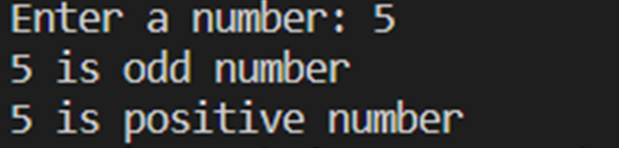
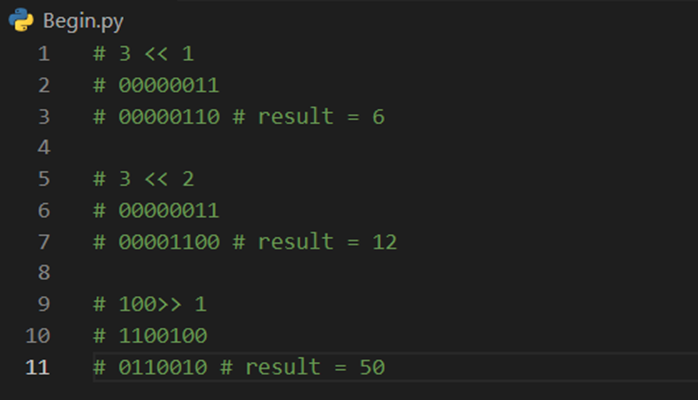

ตัวดำเนินการ ในภาษา Python
ตัวดำเนินการ (Operators) คือกลุ่มของเครื่องหมายหรือสัญลักษณ์ที่ใช้ทำงานเหมือนกับฟังก์ชัน แต่แตกต่างกันตรงไวยากรณ์หรือความหมายในการใช้งาน
ในภาษา Python นั้นสนับสนุนตัวดำเนินการประเภทต่างๆ สำหรับการเขียนโปรแกรม เช่น ตัวดำเนินการ + เป็นตัวดำเนินการทางคณิตศาสตร์ที่ใช้สำหรับการบวกตัวเลขเข้าด้วยกัน
หรือตัวดำเนินการ > เป็นตัวดำเนินการเพื่อให้เปรียบเทียบค่าสองค่า
นี่เป็นรายการของตัวดำเนินการในภาษา Python ที่คุณจะได้เรียนในบทนี้
- Assignment operator
- Arithmetic operators
- Comparison operators
- Logical operators
- Bitwise operators
- Sequence Operators
- Truth Value Testing
Assignment operator
ตัวดำเนินการที่เป็นพื้นฐานที่สุดสำหรับการเขียนโปรแกรมในทุกๆ ภาษาก็คือ ตัวดำเนินการกำหนดค่า (Assignment operator) ตัวดำเนินการนี้แสดงโดยใช้เครื่องหมายเท่ากับ (=)
มันใช้สำหรับกำหนดค่าให้กับตัวแปร มาดูตัวอย่างการใช้งานในภาษา Python
ในตัวอย่าง เป็นการใช้งานตัวดำเนินการกำหนดค่าสำหรับกำหนดค่าให้กับตัวแปรประเภทต่างๆ โดยทั่วไปแล้ว ตัวดำเนินการกำหนดค่านั้นเกือบจะใช้ในทุกๆ ที่ในโปรแกรมและเป็นตัวดำเนินการที่ใช้บ่อยที่สุดของในบรรดาตัวดำเนินการทั้งหมด
Arithmetic operators
ตัวดำเนินการทางคณิตศาสตร์ (Arithmetic operators) คือตัวดำเนินการที่ใช้สำหรับการคำนวณทางคณิตศาสตร์ในพื้นฐาน เช่น การบวก การลบ การคูณ และการหาร มากไปกว่านั้น ในภาษา Python
ยังมีตัวดำเนินการทางคณิตศาสตร์เพิ่มเติม เช่น การหารเอาเศษ (Modulo) การหารแบบเลขจำนวนเต็ม และการยกกำลัง เป็นต้น
นี่เป็นตารางของตัวดำเนินการทางคณิตศาสตร์ในภาษา Python
ในตารางข้างบน เรามีตัวดำเนินการทางคณิตศาสตร์ประเภทต่างๆ สำหรับการคำนวณเกี่ยวกับคณิตศาสตร์เบื้องต้น คุณอาจจะคุ้นเคยกับตัวดำเนินการบวก ลบ คูณ หาร ในการเรียนระดับมัธยมศึกษามาบ้างแล้ว ในภาษา Python นั้นสนับสนุนตัวดำเนินการสำหรับการหารเอาเศษเช่นเดียวกับภาษาอื่นๆ และนอกจากนี้ ยังมีตัวดำเนินการแบบการหารที่ได้ผลลัพธ์เป็นจำนวนเต็ม และการหาเลขยกกำลังเพิ่มเข้ามา มาดูตัวอย่างการใช้ตัวดำเนินการประเภทต่างๆ ในภาษา Python
ในตัวอย่าง เราได้ประกาศตัวแปร a และ b และกำหนดค่าให้กับตัวแปรทั้งสองเป็น 5 และ 3 ตามลำดับ ในสี่ตัวดำเนินการแรกเป็นการดำเนินการทางคณิตศาสตร์พื้นฐาน สำหรับตัวดำเนินการ // เป็นการหารเช่นเดียวกัน แต่ผลลัพธ์ของการหารนั้นจะตัดส่วนที่เป็นทศนิยมทิ้งไป ส่วนตัวดำเนินการ % นั้นเป็นการหารโดยผลลัพธ์จะเป็นเศษของการหารแทน ส่วนสุดท้าย ** นั้นแทนการยกกำลัง

นี่เป็นผลลัพธ์การทำงานของโปรแกรมในการใช้งานตัวดำเนินการทางคณิตศาสตร์
Comparison operators
ตัวดำเนินการเปรียบเทียบ (Comparison operators) คือตัวดำเนินการที่ใช้สำหรับเปรียบเทียบค่าหรือค่าในตัวแปร ซึ่งผลลัพธ์ของการเปรียบเทียบนั้นจะเป็น True หากเงื่อนไขเป็นจริง และเป็น False หากเงื่อนไขไม่เป็นจริง ตัวดำเนินการเปรียบเทียบมักจะใช้กับคำสั่งตรวจสอบเงื่อนไข
if และคำสั่งวนซ้ำ for while เพื่อควบคุมการทำงานของโปรแกรม
นี่เป็นตารางของตัวดำเนินการเปรียบเทียบในภาษา Python
ในตาราง แสดงให้เห็นถึงตัวดำเนินการเปรียบเทียบประเภทต่างๆ เช่น การเปรียบเทียบความเท่ากัน โดยคุณสามารถใช้ตัวดำเนินการเปรียบเทียบเพื่อเปรียบเทียบว่าค่าในตัวแปรนั้นเท่ากันหรือไม่ หรือการเปรียบเทียบค่ามากกว่าหรือน้อยกว่า ต่อไปมาดูตัวอย่างการใช้งานตัวดำเนินการเปรียบเทียบในภาษา Python
ในตัวอย่าง เป็นการเปรียบเทียบค่าประเภทต่างๆ ในคำสั่งกลุ่มแรกนั้นเป็นการใช้ตัวดำเนินการเปรียบเทียบกับค่าคงที่ ในกลุ่มที่สองเป็นการใช้งานกับตัวแปร ซึ่งถ้าหากเงื่อนไขเป็นจริงจะได้ผลลัพธ์เป็น True และถ้าหากไม่จริงจะได้ผลลัพธ์เป็น False
นี่เป็นผลลัพธ์การทำงานของโปรแกรมในการใช้ตัวดำเนินการเปรียบเทียบ
สำหรับตัวดำเนินการ is และ is not นั้นจะเกี่ยวข้องกับ การเขียนโปรแกรมเชิงวัตถุ ซึ่งเป็นรูปแบบการเขียนโปรแกรมขั้นสูง มันใช้สำหรับตรวจสอบความเท่ากันของออบเจ็ค โดยออบเจ็คเหล่านั้นจะต้องอ้างถึงที่อยู่ตำแหน่งเดียวกันในหน่วยความจำ (Reference type) เนื่องจากมันค่อนข้างซับซ้อน ดังนั้น เรามีอีกตัวอย่างที่จะช่วยให้คุณเข้าใจมากขึ้น
ในตัวอย่าง เราได้ประกาศตัวแปร a และกำหนดค่าเป็น 10 และประกาศตัวแปร b โดยกำหนดค่าของมันให้เท่ากับค่าของตัวแปร a คุณจะเห็นว่าในคำสั่ง b = a นั้นจะสร้างตัวแปรใหม่ที่ไม่เกี่ยวข้องกัน แต่มันแตกต่างสำหรับการเขียนโปรแกรมเชิงวัตถุ เพราะการใช้ตัวดำเนินการกำหนดค่า (=) กับออบเจ็คนั้น จะเป็นการอ้างถึงหน่วยความจำแทน
นี่เป็นผลลัพธ์การทำงานของโปรแกรม มาดูตัวอย่างถัดไป
ในตัวอย่าง เราได้สร้างคลาส Person ซึ่งเป็นคลาสของบุคคลที่มีแอตทริบิวต์เป็น name หลังจากนั้นเราได้สร้างออบเจ็คจากคลาสมาสองออบเจ็คคือ p1 และ p2
ในบรรทัดถัดมา เรากำหนดตัวแปร p1 ให้เท่ากับตัวแปร p3 การทำเช่นนี้กับตัวแปรที่เป็น instance ของคลาสนั้นไม่ได้เป็นการสร้างออบเจ็คใหม่ขึ้นมา แต่เป็นการสร้างตัวแปรขึ้นมา โดยที่ตัวแปรนั้นมีหน่วยความจำเดียวกับตัวแปร p1 นั่นจะทำให้สองตัวแปรนี้เป็นออบเจ็คเดียวกัน เพราะมันอ้างถึงข้อมูบเดียวกันในหน่วยความจำ และต่อมาเราได้ใช้ฟังก์ id() เพื่อตรวจสอบที่อยู่ของออบเจ็คในหน่วยความจำ จะเห็นว่าทั้งสองตัวแปรมีที่อยู่เดียวกัน
ในคำสั่งต่อมา เป็นการเปลี่ยนชื่อในตัวแปร p3 เป็น 'Tom' และหลังจากนั้นเราแสดงชื่อในแต่ละตัวแปรอีกครั้ง และผลลัพธ์ที่ได้คือชื่อของตัวแปร p1 ก็เปลี่ยนไปเช่นกัน นี่เป็นการยืนยันว่าทั้งสองตัวแปรนั้นเป็นออบเจ็คเดียวกัน และในตอนท้าย เราได้ทำการเปรียบเทียบด้วยตัวดำเนินการ is
และนี่เป็นผลลัพธ์การทำงานของโปรแกรม
ในการใช้ตัวดำเนินการเปรียบเทียบนั้น เรามักจะใช้กับคำสั่งควบคุมการทำงานของโปรแกรม เช่น คำสั่ง if หรือ for เพื่อให้คุณเข้าใจมากขึ้น มาดูตัวอย่างการนำไปใช้ในการเขียนโปรแกรมกับคำสังเหล่านี้
ในตัวอย่าง เป็นโปรแกรมในการรับค่าตัวเลขแบบ Integer แล้วเราใช้คำสั่ง if ในการตรวจสอบตัวเลขสองอย่างคือ ตรวจสอบว่าเป็นเลขคู่หรือเลขคี่ และตรวจสอบว่าเป็นจำนวนเต็มบวก เต็มลบ หรือศูนย์ ในเงื่อนไข n % 2 == 0 นั้นเป็นการตรวจโดยการหารเอาเศษ ซึ่งมีความหมายว่า หากตัวเลขนั้นหารแล้วมีเศษเท่ากับ 0 นั้นหมายความว่าตัวเลขจะเป็นเลขคู่และในบล็อคคำสั่ง if จะทำงาน และถ้าไม่เป็นจริงโปรแกรมจะทำงานในบล็อคคำสั่ง else แทน ในบล็อคของคำสั่ง if ต่อมา เป็นการตรวจสอบว่าตัวเลขนั้นเป็นตัวเลขที่มากกว่า น้อยกว่า หรือเท่ากับศูนย์

นี่เป็นผลลัพธ์การทำงานของโปรแกรมสองครั้ง เมื่อเรากรอกตัวเลขเป็น 5 และ -1 ตามลำดับ และโปรแกรมจะบอกเราว่าตัวเลขนั้นเป็นแบบไหน
Logical operators
ตัวดำเนินการตรรกศาสตร์ (Logical operators) คือตัวดำเนินการที่ใช้สำหรับประเมินค่าทางตรรกศาสตร์ ซึ่งเป็นค่าที่มีเพียงจริง (True) และเท็จ (False) เท่านั้น โดยทั่วไปแล้วเรามักใช้ตัวดำเนินการตรรกศาสตร์ในการเชื่อม Boolean expression ตั้งแต่หนึ่ง expression ขึ้นไปและผลลัพธ์สุดท้ายที่ได้นั้นจะเป็น Boolean
นี่เป็นตารางของตัวดำเนินการตรรกศาสตร์ในภาษา Python

ในภาษา Python นั้นมีตัวดำเนินการทางตรรกศาสตร์ 3 ชนิด คือ ตัวดำเนินการ and เป็นตัวดำเนินการที่ใช้เชื่อมสอง Expression และได้ผลลัพธ์เป็น True หาก Expression ทั้งสองเป็น True ไม่เช่นนั้นจะได้ผลลัพธ์เป็น False ตัวดำเนินการ or เป็นตัวดำเนินการที่ใช้เชื่อมสอง Expression และได้ผลลัพธ์เป็น True หากมีอย่างน้อยหนึ่ง Expression ที่เป็น True ไม่เช่นนั้นได้ผลลัพธ์เป็น False และตัวดำเนินการ not ใช้ในการกลับค่าจาก True เป็น False และในทางกลับกัน มาดูตัวอย่างการใช้งาน
ในตัวอย่าง เราได้สร้างโปรแกรมจำลองในการเข้าสู่ระบบของหน้าเว็บไซต์ ในการที่จะเข้าสู่ระบบ ผู้ใช้ต้องกรอกชื่อผู้ใช้และรหัสผ่านให้ถูกต้อง ดังนั้นเราจึงใช้ตัวดำเนินการ and เพื่อตรวจสอบว่าทั้งชื่อผู้ใช้และรหัสผ่านนั้นถูกต้อง ทำให้เงื่อนไขเป็นจริงและในบล็อคคำสั่ง if จะทำงาน
นี่เป็นผลลัพธ์การทำงานของโปรแกรม เมื่อเรากรอกชื่อผู้ใช้เป็น "Tinnapat" และรหัสผ่านเป็น "1234" ซึ่งถูกต้องทั้งสองอย่างทำให้สามารถเข้าสู่ระบบได้สำเร็จ
Bitwise operators
ตัวดำเนินการระดับบิต (Bitwise operators) เป็นตัวดำเนินการที่ทำงานในระดับบิตของข้อมูล หรือจัดการข้อมูลในระบบเลขฐานสอง โดยทั่วไปแล้วตัวดำเนินการระดับบิตมักจะใช้กับการเขียนโปรแกรมระดับต่ำ เช่น การเขียนโปรแกรมเพื่อควบคุมฮาร์ดแวร์ อย่างไรก็ตาม ในภาษา Python นั้นสนับสนุนตัวดำเนินการเพื่อให้เราสามารถจัดการกับบิตของข้อมูลโดยตรงได้
นี่เป็นตารางของตัวดำเนินการระดับบิตในภาษา Python
ตัวดำเนินการระดับบิตใช้จัดการกับบิตของข้อมูลที่เป็นตัวเลข โดยปกติแล้วเมื่อเรากำหนดค่าให้กับตัวแปรนั้น คอมพิวเตอร์จะเก็บค่าเหล่านี้ในหน่วยความจำในรูปแบบของตัวเลขฐานสอง (binary form) ซึ่งประกอบไปด้วยเพียง 1 และ 0 เท่านั้น ดังนั้นเราใช้ตัวดำเนินการเหล่านี้ในการจัดการกับข้อมูลได้โดยตรง มาดูตัวอย่าง
ในตัวอย่าง เป็นการใช้ตัวดำเนินการระดับบิตประเภทต่างๆ ในภาษา Python เรามีตัวแปร a และตัวแปร b และกำหนดค่า 3 และ 5 ให้กับตัวแปรตามลำดับ เราได้คอมเมนต์ค่าในฐานสองไว้ด้วย ในการทำงานนั้นโปรแกรมจะทำงานทีละคู่ของบิต ดูวิธีการคำนวณต่อไปนี้ประกอบ
จากการแสดงการทำงานข้างบนนั้น ในตัวดำเนินการ & หากทั้งสองบิตมีค่าเป็น 1 จะได้ผลลัพธ์เป็น 1 ไม่เช่นนั้น 0 ในตัวดำเนินการ | หากอย่างน้อยหนึ่งบิตที่มีค่าเป็น 1 จะได้ผลลัพธ์เป็น 1 ไม่เช่นนั้น 0 ในตัวดำเนินการ ^ หากทั้งสองบิตนั้นแตกต่างกันจะได้ผลลัพธ์เป็น 1 ไม่เช่นนั้น 0 และในตัวดำเนินการ ~ นั้นเป็นการกลับค่าของบิต หลังจากนั้นเราแปลงผลลัพธ์ที่ได้กลับไปยังฐานสิบ
อีกสามคำสั่งต่อมาเป็นการใช้งานตัวดำเนินการเลื่อนบิต ในการทำงานนั้นจะเป็นการเลื่อนบิตไปทางซ้ายหรือขวาตามทิศทางของลูกศรของตัวดำเนินการ บิตที่เข้ามาใหม่ทางด้านซ้ายหรือขวานั้นเป็นบิต 0 เสมอ โดยทั่วไปแล้ว เมื่อเราเลื่อนบิตของตัวเลขใดๆ ไปทางด้านซ้ายหนึ่งครั้งจะทำให้ค่าเพิ่มขึ้นสองเท่า และถ้าหากเลื่อนไปทางด้านขวาหนึ่งครั้งจะทำให้ค่าลดลงครึ่งหนึ่ง
นี่เป็นผลลัพธ์การทำงานของโปรแกรม ในการใช้งานตัวดำเนินการระดับบิตในภาษา Python
Sequence Operators
ในภาษา Python มีตัวดำเนินการในการตรวจสอบการเป็นสมาชิกในออบเจ็คประเภท List Tuple และ Dictionary ตัวดำเนินการ in ใช้ในการตรวจสอบถ้าหากค่านั้นมีอยู่ในออบเจ็ค ถ้าหากพบจะได้ผลลัพธ์เป็น True และหากไม่พบจะได้ผลลัพธ์เป็น False และตัวดำเนินการ not in นั้นจะทำงานตรงกันข้าม หากไม่พบจะได้ผลลัพธ์เป็น True แทน
นี่เป็นตารางของตัวดำเนินการในการตรวจสอบการเป็นสมาชิกในออบเจ็ค ในภาษา Python
มาดูตัวอย่างการใช้งานของตัวดำเนินการเหล่านี้ เราจะใช้ในการตรวจสอบการมีอยู่ของข้อมูลใน List และ Dictionary
ในตัวอย่าง เป็นการตรวจสอบข้อมูลใน List และ Dictionary ในโปรแกรมของเรามีตัวแปร List names ซึ่งมีรายชื่ออยู่ภายใน เราใช้คำสั่ง if เพื่อตรวจสอบว่า "Mateo" นั้นมีอยู่ใน List หรือไม่ ผลลัพธ์ที่ได้นั้นจะเป็นจริงเพราะชื่อมีอยู่
และต่อมาเราตรวจสอบ "Jonathan" นั้นไม่พบชื่อดังกล่าวใน List ต่อมาเป็นการตรวจสอบการมีอยู่ของข้อมูลใน Dictionary เนื่องจาก Dictionary นั้นเป็นข้อมูลที่เก็บในคู่ของ Key และ Values เพื่อตรวจสอบกับ Key เราต้องใช้เมธอด keys() และเมธอด values() สำหรับ Value
นี่เป็นผลลัพธ์การทำงานของโปรแกรม
Truth Value Testing
เนื่องจากตัวแปรในภาษา Python นั้นเป็นประเภทข้อมูลแบบไดนามิกส์ ดังนั้นออบเจ็คต่างๆ นั้นสามารถที่จะทำมาประเมินสำหรับค่าความจริง โดยการใช้คำสั่งตรวจสอบเงื่อนไขเช่น if หรือ while หรือการกระทำเพื่อตรวจหาค่า boolean โดยค่าข้างล่างนี้เป็นค่าที่ถูกประเมินเป็น False
- None
- False
- ค่าศูนย์ของข้อมูลประเภทตัวเลขใดๆ เช่น 0, 0L, 0.0, 0j
- ข้อมูลแบบลำดับที่ว่างปล่าว เช่น '', (), []
- ข้อมูลแบบ map ที่่ว่างปล่าว {}
- ตัวแปรจากคลาสที่ผู้ใช้สร้างขึ้น และคลาสดังกล่างถูกกำหนดเมธอด __nonzero__() หรือ __len__() และเมธอดเหล่านี้ส่งค่ากลับเป็นศูนย์หรือค่า Boolean False
ส่วนค่าอื่นๆ ที่นอกเหนือจากที่ได้กล่าวไปนั้นจะถูกประเมินเป็น True ทั้งหมด และออบเจ็คของประเภทใดๆ ก็เป็น True เช่นกัน
ในบทนี้ คุณเรียนรู้เกี่ยวกับตัวดำเนินการในภาษา Python เราได้ครอบคลุมการใช้งานตัวดำเนินการประเภทต่างๆ และตัวอย่างในประยุกต์ใช้งานตัวดำเนินการเหล่านี้ในการเขียนโปรแกรม และหลักในการประเมินค่าความจริงของตัวแปรและออบเจ็ค